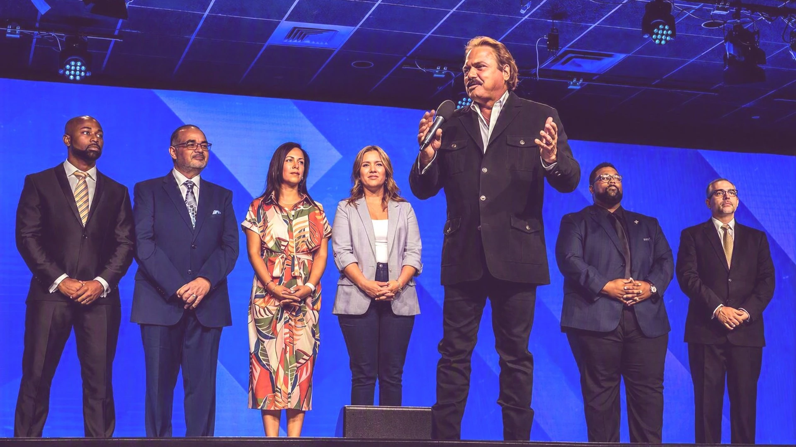

Sunday morning
7 AM · Cathedral Lobby
Every Sunday our men gather to pray as a group over each other, our families and communities, and participate in the Every Man a Warrior discipleship program.
Men's Ministry

Leading families. Serving God. Building brothers. Our men’s ministry provides the tools and supportive community men need to protect their purpose and mature in their walk with God.
A rhythm of connection
7 AM · Cathedral Lobby
Every Sunday our men gather to pray as a group over each other, our families and communities, and participate in the Every Man a Warrior discipleship program.
6:30 PM · Fellowship Court
We meet weekly for dinner and fellowship, then break into small groups for Every Man a Warrior or Iron Sharpens.
Saturday breakfasts take place at various times throughout the year, with inspiring stories from guest speakers. In addition to Sunday and personal prayer, a special men’s prayer service takes place in December.
Grow with intention
Every Man A Warrior is an ongoing, 32-week discipleship Bible study program that helps men succeed in life. EMAW builds into men the biblical principles and practical life skills to succeed in all areas of life. Registration is open.
17 OCTMen’s Breakfast
Saturday · 8 AM
05 DECMen’s Prayer
Saturday · 8 AM
21 DECMen’s Game Night
Monday · 6 PM